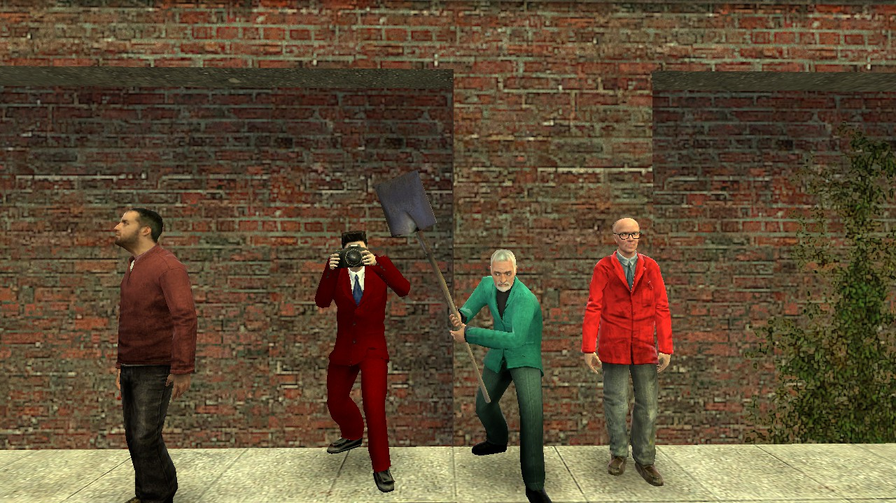
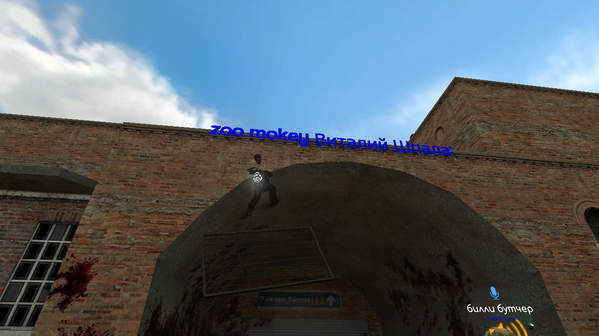
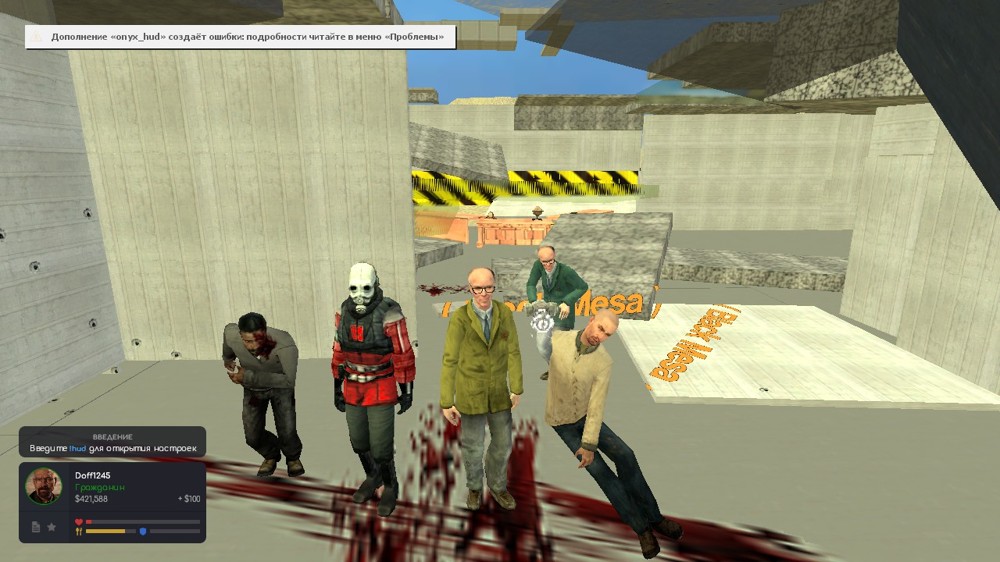
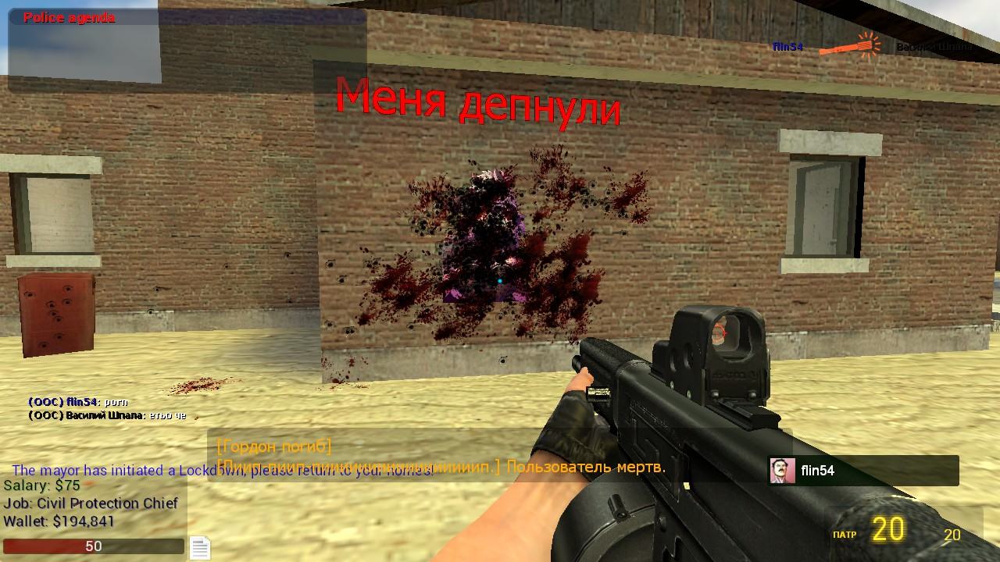

Летопись нашего DarkRP
Как всё начиналось и кто был с нами
📜 С чего всё начиналось
Создание сервера началось, когда я просто решил зайти с друзьями на свою старую сырую сборку DarkRP, собранную из мастерской. Через какое-то время я решил написать свой код, чтобы создать более удобный геймплей. Изначально мне приходилось выдавать оружие M9K всем вручную через админ-команду. Спустя время я улучшил этот момент, сделал игровой процесс удобнее, и тратить время на постоянную выдачу пушек командами больше не приходилось.
На сервере часто нарушали правила, но я ничего не мог сделать, так как самих правил у меня ещё не было. Позже, когда я их наконец создал, нарушений стало меньше, но на сервере всё равно частенько вспыхивали конфликты.
Однажды я решил выпустить крупное обновление, которое полностью изменило весь сервер. Я добавил нормальные маники и новые заработки: варку, выращивание драгсов и ферму биткоинов. Каждый крутился как хотел. Spy Games, например, больше всего любил варку — в основном он сидел в пустыне, просто варил, и ему это, похоже, дико нравилось. Было много багов с пропами, вроде пропкилла или проппуша, которые я постоянно пытался фиксить.
Я всегда хотел создать мирный сервер просто для разнообразия, потому что для меня уже тогда Гаррис Мод стал очень скучным. Через какое-то время, после того как Sivox покинул DoffRP, я решил создать проект по HL2RP, так как познакомился почти со всеми именно на этой тематике. На HL2RP ушло очень много времени, сервер ещё точно не закончен, но результат, как по мне, уже хороший. В будущем я хочу заняться созданием своих аддонов на оружие, чтобы не искать готовые паки. Пока что я плох в моделировании, но очень хочу научиться.
Иногда сервера приходилось останавливать просто потому, что я не мог справиться со всем в одиночку — каждые три минуты у меня кто-то сидел в джайле. flin54 был админом несколько раз и является им сейчас 03.10.2026. Часто я снимал его с поста из-за нарушений, которые он совершал. Иногда случались сливы сервера, из-за чего игроки теряли весь свой прогресс.
Надеюсь, что сервер будет развиваться дальше и я его не заброшу. Спасибо всем, кто читал, на этом всё!
👥 Игроки сервера
Кто играл на сервере:
- Spy Games
- ReallyOtoko
- feko92
- Fess_Undead
- Vikan83
- YYNAX
👋 Покинул проект:
- Sivox (ушел из DoffRP)
📸 Памятные скриншоты



